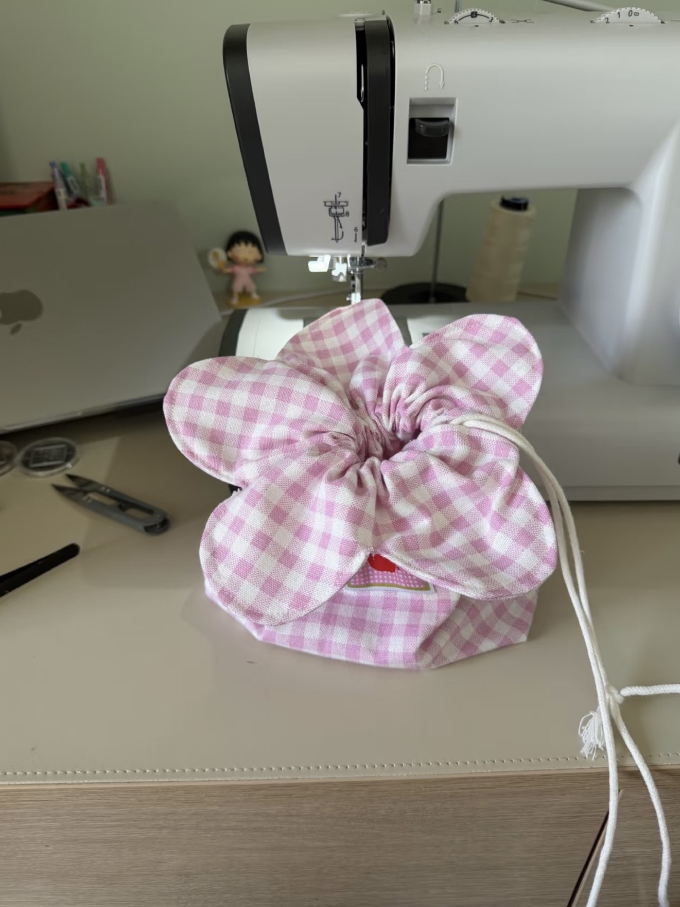
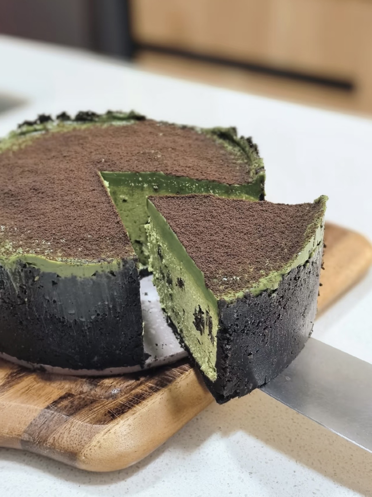
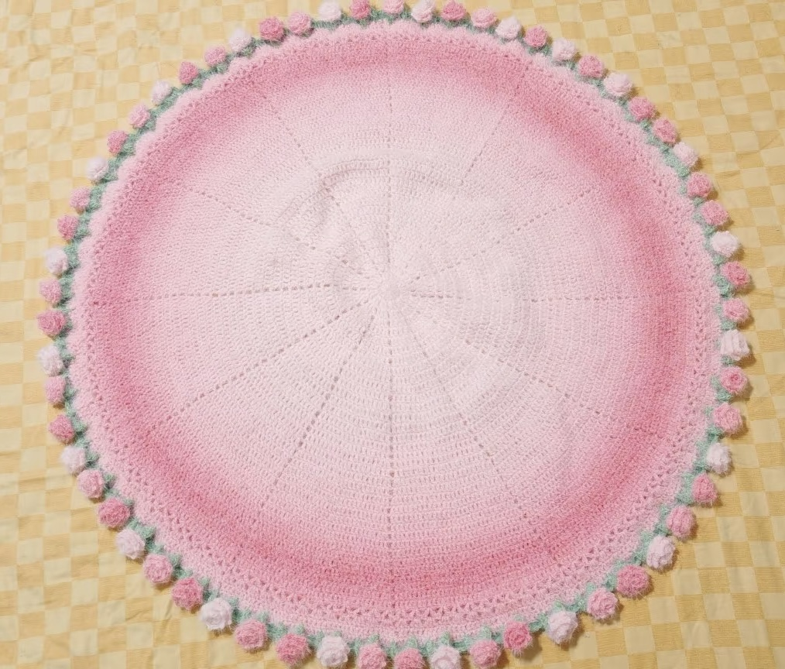

Shenzhen → Vancouver
Learning through making
I grew up in Shenzhen and moved to Vancouver for high school. Sewing, baking, and making things by hand helped me recognize an early pattern: I was happiest when I could understand how something was made, then shape the pieces into a finished object of my own.


